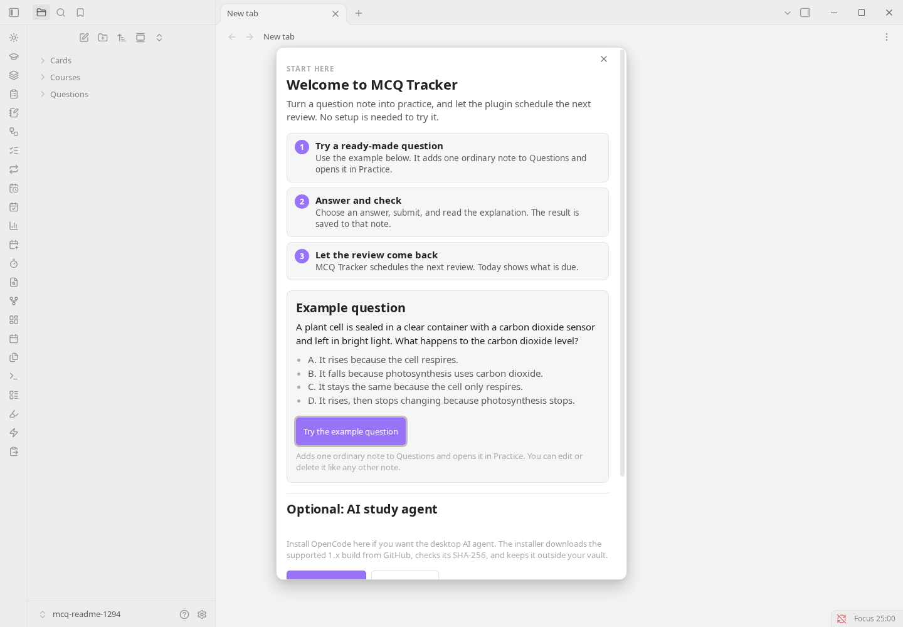

Practice the formats your exam uses
Multiple choice, student-produced response, matching, true/false, select-all and free response. Add confidence, timing, mistake tags and an explanation.
Obsidian community plugin
Write or import questions, review whole notes and cards on one schedule, and see exactly what is weak — all inside your vault.

The loop
MCQ Tracker is not a deck you maintain in another app. It is a practice loop that keeps the attempt, the explanation and the next review date on the note they belong to.
Read the documentationMultiple choice, student-produced response, matching, true/false, select-all and free response. Add confidence, timing, mistake tags and an explanation.
Whole-note review, cards and questions share one schedule: FSRS, SM-2 or a simple interval ladder. A failed note returns later in the same session.
Flip, cloze, reversed, typed and image-occlusion cards. Import and export .apkg, find shared decks on AnkiWeb, or sync with Anki desktop through AnkiConnect.
Timed multi-section tests with resume, a question navigator and Bluebook-style tools. AP-style free response, a gradebook, a calendar and a study plan.
Optional chat with tutor roles, local vault search, PDF context and plan-then-act. It proposes writes; you approve them before anything changes.
Review state lives in each note’s properties, so progress travels with the vault, survives a plugin reinstall and stays readable in a text editor or Dataview.
Screens
Every screenshot below is from the shipping 1.294.0 build, in Obsidian’s own theme.



Command palette
Practice, review, cards, tests and the study agent are all registered commands. Open the palette and type what you want to do.
⌘P on macOSCtrlP on Windows and Linux
Install
MCQ Tracker is a community plugin. Install it from inside Obsidian; no separate download or account is required.
In Obsidian, go to Settings → Community plugins and turn off Restricted mode if it is on.
Choose Browse, search for MCQ Tracker and open the result by Isaac Friedenson.
Click Install, then Enable. The Start here screen offers one example question you can skip.
Local-first
No analytics, no ads, no self-updater. Review state is ordinary note frontmatter, and AI stays off until you choose a provider.
The plugin does not phone home. There is no crash reporting, analytics or usage counter.
Only the text a request needs goes to the provider you chose. Everything else runs locally.
Progress travels with the vault. Reinstall the plugin and your review history is still there.
Feedback
Two minutes, no account. Tell us what you study, what is missing, and what got in the way.
Your answers go to the plugin author through Tally. Nothing is attached to your vault, and the form only opens when you click.